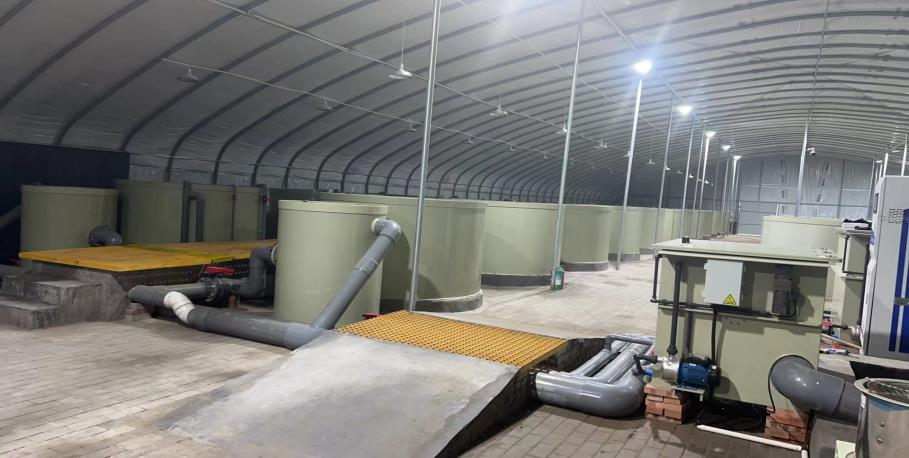
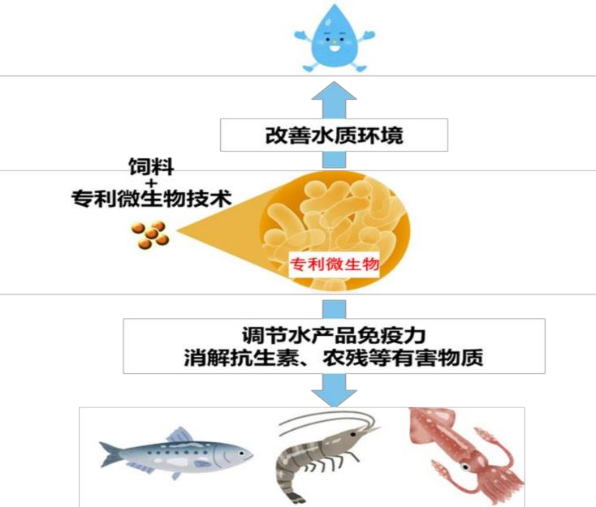
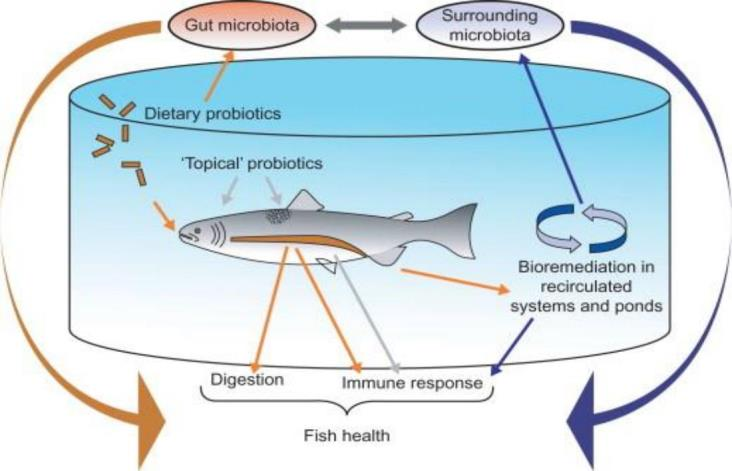
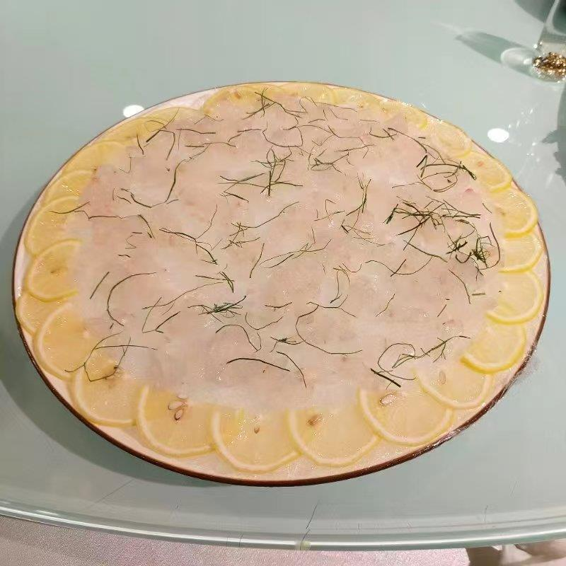
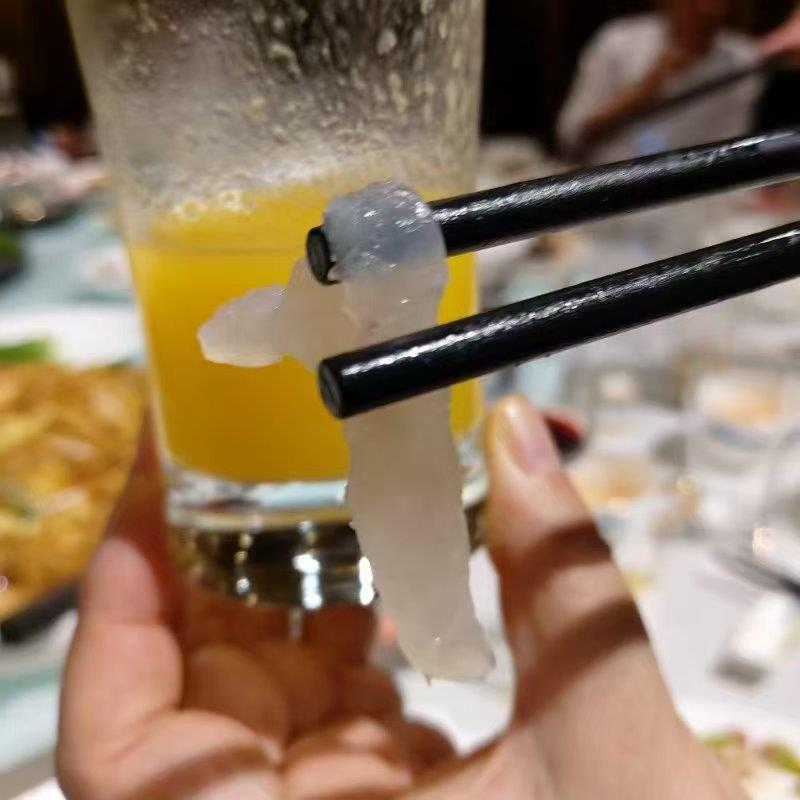
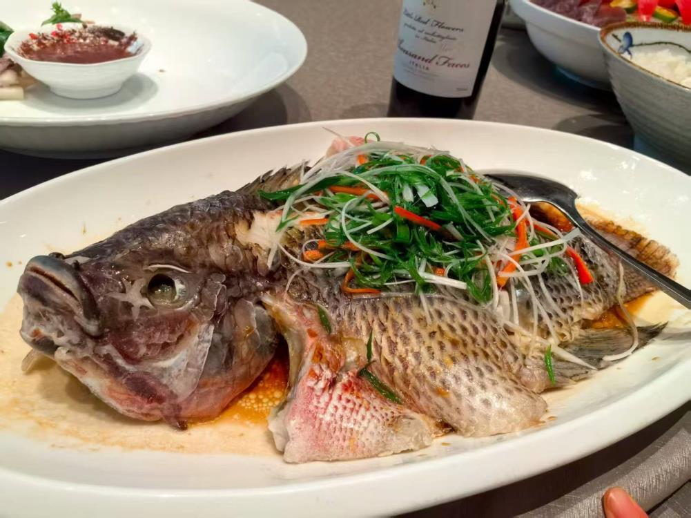
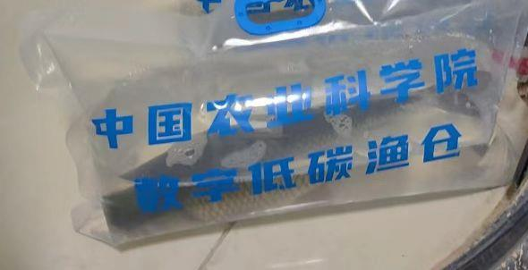

一、产品定位
鱼用生物净化技术动力素（以下简称"渔仓动力素"）是基于农用动力素生命动力元素体系，结合中草药活性成分，专门针对水产养殖与销地净化场景研发的生物净化技术产品。
本产品是中国农科院数字低碳渔仓技术体系的核心配套技术，通过在销地净化环节使用，使普通养殖水产品达到：
生食标准
零抗生素、零重金属、零农残，可直接生食
营养富集
定向提升 DHA、EPA、硒、虾青素等关键营养素
品牌溢价
从"养殖端竞价"转向"品质端定价"，实现优质优价
二、研发背景
2.1 行业痛点
我国水产品 4/5 由养殖提供，占全球水产养殖产量 2/3，水产品贡献我国 1/3 的动物蛋白。但行业长期面临核心困境：
优质得不到优价——安全、口感、营养、品牌价值未充分体现，养殖端陷入价格竞争。
2.2 技术溯源
通过国家重点课题研究生命动力元素，创立第四统计力学（群子理论），成功用当代科学语境解读《黄帝内经》中"阴阳精""通天气"的生命动力核心奥秘，研发出农用动力素。
中科院聚宇能自然科学研究院与广东省中药研究所深度合作，将生命动力元素体系与中草药活性成分相结合，专门针对水产品生物净化场景，研发出本产品。
三、科学原理
3.1 生命动力元素的能量转化体系
渔仓动力素继承了农用动力素的三大核心科学原理：
⚛️ d轨道孤对电子 —— 非化学能动力源
所有生命动力元素（Cu、Fe、Mn、Zn、Se等）的外层d轨道均含 1-5个孤对电子。量子化学理论表明：
- 电子对加速时正反加速度相互抵消，无法辐射能量
- 孤电子受中微子撞击加速时，向外释放电磁能为鱼体生化反应提供"非化学能动力"，能量密度是ATP的数十倍
在鱼体净化过程中，这一机制显著加速：有害物质（抗生素、重金属、农残）的代谢排出；营养物质的合成与富集；鱼肉品质的改善与提升。
💧 正八面水络合离子 —— 中微子"透镜"
生命动力元素与水分子形成正八面水络合离子（双金字塔叠加液晶结构），其晶格常数与中微子波长高度匹配，可像"透镜"一样聚焦宇宙中无处不在的中微子，实现无损耗能量捕获。
- 降低鱼体生化反应活化能 30%-50%
- 加速净化代谢反应效率
- 提升鱼体自身免疫力与抗逆性
🌌 中微子能量转化 —— 宇宙能量的生物利用
正八面水络合离子通过共振效应使中微子减速并释放能量，驱动鱼体内生化反应高效进行，实现："把宇宙能量转化为鱼体品质提升的动力"。
3.2 中草药配方的协同增效
广东省中药研究所基于传统中医药理论，筛选出具有解毒、扶正、富集营养功效的道地中草药，经现代提取工艺制备成活性成分，与生命动力元素协同作用：
| 中草药功能方向 | 代表性功效 | 与动力素协同效应 |
|---|---|---|
| 解毒排毒 | 加速重金属、抗生素、农残代谢排出 | 动力素提供能量驱动，中草药提供代谢通路 |
| 扶正固本 | 增强鱼体免疫力，降低应激反应 | 生命动力元素提升SOD活性，中草药提供抗氧化支持 |
| 营养富集 | 促进DHA、EPA、硒等营养成分积累 | 动力素催化+中草药底物供应，双重驱动 |
3.3 《黄帝内经》的超前科学解读
金日光团队通过群子论计算发现，以 Zn²⁺ 为界（氧化电位+0.76V），生命动力元素可分为：
- 阳精元素（氧化电位＞+0.76V）：催化合成含-OH基团的"热性生物分子"，增强鱼体的"流动性能力"（如养分运输、血液循环）
- 阴精元素（氧化电位＜+0.76V）：催化合成含-N=基团的"寒性生物分子"，增强鱼体的"凝固性能力"（如肌肉紧实度、抗逆性）
渔仓动力素通过阴阳精协同，使鱼体达到最佳生理平衡状态，实现：
四、核心技术与作用机理
4.1 三大作用机理
① 阴阳精协同催化 —— 加速净化代谢
渔仓动力素中 Cu、Fe、Mn、Zn、Se 等微量元素的含量与比例，精准匹配鱼体深层次生化反应的"催化中心需求"：
| 元素 | 在鱼体中的作用 |
|---|---|
| Fe 与 Cu | 参与血红蛋白合成，提升鱼体氧运输能力 |
| Mn | 超氧化物歧化酶（SOD）活性中心，清除自由基 |
| Zn | 碳酸酐酶辅酶，调节鱼体内酸碱平衡 |
| Se | 谷胱甘肽过氧化物酶核心成分，解毒抗氧化 |
| Co | 维生素B12成分，促进蛋白质合成 |
这些元素的协同作用，使鱼体净化代谢反应速率提升 20%-40%。
② 生态氧与羟基自由基 —— 降解有害物质
动力素中富含 Cu、Fe、Mn、Zn 等可价变元素离子，在水体净化过程中产生具有强烈氧化作用的生态氧[O]和羟基自由基[·OH]：
- ·OH（氧化电位高达2.80V）：自然界最强氧化剂之一——破坏鱼体内抗生素分子结构加速代谢排出、降解农药残留（有机磷类、拟除虫菊酯类等）、氧化分解重金属离子降低生物可利用性
- [O]：抑制水体病原菌活性，减少二次污染
对有益生物无毒性——鱼体内天然含超氧化物歧化酶（SOD），可抵御·OH氧化。
③ 短链水分子传输 —— 营养直送细胞器
传统养殖水体多为"长链线团凝聚水"（20-30个水分子聚合），流体力学半径大（＞10nm），难以通过细胞膜（孔径约2-5nm）。
渔仓动力素经高能处理后，将水分子链打断，形成以金属离子为中心的短链小分子水（6-12个水分子，半径＜3nm）：
- 高渗透性：提升鱼体水分吸收效率 40%-60%
- 养分载体：金属离子-水分子络合物形成"水化液晶层"，将微量元素直接输送至鱼体细胞器
- 促进营养富集：短链水分子参与鱼体代谢反应，显著提升 DHA、EPA 等营养成分的合成与积累
4.2 数字低碳渔仓技术体系的集成应用
渔仓动力素是中国农科院数字低碳渔仓的核心配套技术。下图为数字低碳渔仓的实际应用场景：

从普通养殖鱼到品牌优质水产品的完整流程：


数字技术赋能： 物联网传感器实时监测水质（pH、溶解氧、氨氮、水温等）；AI算法优化净化参数确保每批次产品品质稳定；区块链溯源实现"有背书、有认证、有保证、可追溯"。
五、产品功效
5.1 四大核心功效
① 生物净化 —— 水产品的"安全卫士"
| 净化指标 | 净化前 | 净化后 | 降幅 |
|---|---|---|---|
| 抗生素残留 | 检出 | 未检出 | 100% |
| 重金属（铅、汞、镉等） | 检出 | 未检出 / 远低于国家标准 | ≥95% |
| 农药残留（有机磷类等） | 检出 | 未检出 | 100% |
| 泥腥味物质（土臭素等） | 明显 | 无异味 | 完全去除 |
净化周期：≤ 14天（可视鱼体初始状况调整）
委托单位：百佳创新(北京)科技有限公司 · 检测机构：北京清析技术研究院
检测方法：德国PEN3电子鼻（10传感器阵列）
检测样本：鱼肉（动力液处理）vs 鱼肉（空白对照）
核心结论：主成分分析（PCA）显示，处理组与对照组气味轮廓累积贡献率超过89%，两组样品挥发物特征显著区分。其中，对高腥味样本，关键硫化合物（W1W传感器）信号值下降约32%，腥味物质大幅降低。
② 营养富集 —— 水产品的"营养加强"
| 营养成分 | 提升幅度 | 健康价值 |
|---|---|---|
| DHA（脑黄金） | +50%~120% | 促进大脑发育，保护心血管 |
| EPA（血管清道夫） | +40%~100% | 降低血脂，抗炎 |
| 硒（抗氧化之王） | +30%~80% | 增强免疫力，抗衰老 |
| 虾青素 | +40%~90% | 强抗氧化，美容抗衰 |
| 氨基酸总量 | +30%左右 | 提升鲜味，改善口感 |
③ 品质提升 —— 从"能吃"到"好吃"
- 外观：鱼肉晶莹剔透，鱼体洁净
- 气味：无泥腥味，有自然鲜香
- 滋味：口感鲜甜，氨基酸风味物质丰富
- 质地：肉质紧实Q弹，无松散感
- 生命力：鱼体活力强，耐受长途运输
委托单位：百佳创新(北京)科技有限公司 · 检测机构：北京清析技术研究院
检测设备：日本INSENT SA402B型电子舌（8传感器阵列）
检测样本：鱼肉（动力液处理）vs 鱼肉（空白对照）
| 味觉指标 | 空白组 | 动力液组 | 提升幅度 | 说明 |
|---|---|---|---|---|
| 鲜味 Umami | 4.43 | 6.82 | +54% | 鲜味显著提升，口感更鲜美 |
| 鲜味持久度 Richness | 3.19 | 3.82 | +20% | 鲜味更持久，回味更长 |
| 涩味 Astringency | -9.67 | -12.03 | 涩味降低 | 口感更柔和，无涩感 |
| 咸味 Saltiness | -1.58（无） | +2.23 | 自然咸鲜 | 天然提鲜，减少外加盐需求 |
结论：动力素处理使鱼肉鲜味提升54%，鲜味持久度提升20%，涩味明显降低，自然咸鲜味增强，口感品质全面跃升。



④ 达标认证 —— 优质优价的通行证
- ✅ 生食标准（可直接生食）
- ✅ 全国名特优新农产品认证标准
- ✅ 特质水产品营养品质评价认证标准
- ✅ 零抗生素、零重金属、零农残检测标准

5.2 与普通水产品的对比
| 对比维度 | 普通养殖鱼 | 渔仓动力素净化鱼 |
|---|---|---|
| 抗生素残留 | 可能检出 | 零检出 |
| 重金属残留 | 可能检出 | 零检出 / 远低于国标 |
| 农残 | 可能检出 | 零检出 |
| 泥腥味 | 明显 | 无（电子鼻证实腥味物质显著降低） |
| 鲜味 Umami | 基准 | +54%（电子舌实测） |
| 鲜味持久度 | 基准 | +20%（电子舌实测） |
| DHA含量 | 基准 | +50%~120% |
| EPA含量 | 基准 | +40%~100% |
| 可生食 | ❌ | ✅ |
| 品牌溢价 | 无 | 有（优质优价） |
六、使用方法
6.1 适用场景
- 数字低碳渔仓：销地净化环节，配合RAS循环水系统使用
- 养殖末端净化：养殖池出水前14天开始使用
- 活鱼运输途中：添加于运输水体，维持鱼体活力
6.2 施用方案
| 使用阶段 | 配比 | 用量 | 方式 | 周期 |
|---|---|---|---|---|
| 净化全期（第1-14天） | 1/8000 | 125g/吨水 | 全池均匀泼洒 | 一次性 |
6.3 注意事项
- 水质要求：使用清洁水源，避免强氯消毒水直接混入
- 温度控制：适宜水温 15-30℃，低温时适当延长净化周期
- 避光保存：产品应存放于阴凉干燥处，避免阳光直射
- 混合使用：可与渔仓系统现有生物制剂配合使用，建议先小范围试验
- 检测确认：净化完成后建议进行抽样检测，确认达标后再出库
七、权威背书
7.1 研发机构
中科院聚宇能自然科学研究院
1998年成立，金日光教授任第一任院长，依托北京化工大学科研基础，致力于生命动力元素与新型材料研究。
广东省中药研究所
专业中草药研究机构，负责中草药活性成分筛选与提取工艺。
7.2 认证与荣誉
八、最新检验报告摘要（2026年6月）
本章节汇总2026年6月由北京清析技术研究院出具的两份独立检验报告，以客观仪器数据证实渔仓动力素对鱼肉品质的提升效果。
8.1 电子舌口感分析（报告编号：BT2606110105-1）
检测目的
通过电子舌客观量化鱼肉的味觉特征，对比动力素处理组与空白对照组的口感差异。
检测设备
日本INSENT SA402B型电子舌，配备8个味觉传感器（酸、苦、涩、鲜、咸、甜等）。
检测结果核心数据
| 味觉指标 | 空白对照组（均值） | 动力液处理组（均值） | 变化幅度 | 消费者感知 |
|---|---|---|---|---|
| 鲜味 Umami | 4.43 | 6.82 | +54% | 鱼肉明显更鲜美 |
| 鲜味持久度 Richness | 3.19 | 3.82 | +20% | 回味更长久，鲜味不散 |
| 涩味 Astringency | -9.67 | -12.03 | 降低约20% | 口感更柔和，无涩感 |
| 咸味 Saltness | -1.58（无味） | +2.23（有味） | 自然咸鲜显现 | 天然提鲜，减少食盐添加 |
| 酸味 Sourness | -43.97 | -50.14 | 无酸味 | 鱼肉无酸败味 |
| 苦味 Bitterness | 5.89 | 5.41 | 略有降低 | 无苦味干扰 |
结果解读
- 鲜味提升54%：动力素处理使鱼肉鲜味物质（氨基酸、核苷酸等）显著富集，电子舌鲜味传感器信号提升超过50%。
- 鲜味持久度提升20%：Richness指标反映鲜味的持久性（回味长度），提升20%意味着鱼肉在口中咀嚼后，鲜味停留时间更长。
- 涩味降低：涩味是鱼肉常见不良口感之一，动力素处理使涩味传感器信号向更低方向变化。
- 自然咸鲜显现：空白组咸味值为-1.58（低于无味点），动力液组升至+2.23，说明动力素促进了鱼肉中天然呈味物质的富集。
- PCA主成分分析：处理组与对照组在味觉空间中形成明显分离，说明动力素对鱼肉整体味觉轮廓产生了可测量的系统性影响。
8.2 电子鼻气味分析（报告编号：BT2606110105-2）
检测目的
通过电子鼻客观量化鱼肉的挥发性气味物质，对比动力素处理组与空白对照组气味轮廓的差异。
检测设备
德国PEN3电子鼻，配备10个化学传感器阵列，可检测芳烃、氮氧化物、氨、硫化合物、醇类、烷类等挥发性物质。
| 传感器 | 敏感物质 | 与鱼肉品质的关联 |
|---|---|---|
| W1C | 芳烃化合物 | 饲料风味残留 |
| W5S | 氮氧化合物 | 腐败早期产物 |
| W3C | 氨、芳香分子 | 新鲜度指标 |
| W6S | 氢化物 | 脂肪氧化产物 |
| W5C | 烯烃、极性分子 | 风味物质 |
| W1S | 烷类 | 脂肪氧化程度 |
| W1W | 硫化合物 | 泥腥味、鱼腥味的核心来源 |
| W2S | 醇类、部分芳香族 | 发酵/成熟风味 |
| W2W | 芳烃、硫有机物 | 综合异味 |
| W3S | 烷类、脂肪族 | 基础风味 |
核心检测结果
① 气味轮廓显著改变：主成分分析（PCA）显示，处理组与对照组在气味空间中的分布明显分离，累积贡献率超过89%，两组样品的气味特征存在系统性、显著性差异。
② 关键腥味物质（硫化合物）降低：W1W传感器专门检测硫化合物，是泥腥味、鱼腥味的核心化学来源（土臭素、二甲基硫等）。
| 样本组别 | 空白组W1W均值 | 动力液组W1W均值 | 变化 |
|---|---|---|---|
| 高腥味组 | 5.80 | 3.97 | ↓ 32% |
| 中腥味组 | 4.44 | 3.34 | ↓ 25% |
信号值越低，表示硫化合物浓度越低，鱼肉腥味越淡。
③ 综合气味品质提升：LOADINGS分析显示，对样品分类贡献最大的传感器为 W6S（氢化物，脂肪氧化产物）和 W1S（烷类，脂肪氧化程度），说明动力素主要通过对脂肪氧化途径的调控，减少异味物质的产生。
结果解读
- 腥味显著降低：电子鼻数据证实，动力素处理使鱼肉中硫化合物（腥味核心来源）信号降低25%~32%，与消费者主观评价"无泥腥味"高度吻合。
- 脂肪氧化受抑制：W6S和W1S传感器信号的变化，说明动力素可能通过抗氧化途径，抑制鱼肉脂肪氧化。
- 气味轮廓系统性改变：PCA累积贡献率89%是一个很高的数值，说明处理组与对照组的气味差异是系统性、整体性的。
8.3 两份报告的联合结论
| 评价维度 | 电子舌（口感） | 电子鼻（气味） | 联合结论 |
|---|---|---|---|
| 鲜味 | 鲜味+54%，持久度+20% | — | 口感品质大幅提升 |
| 腥味/异味 | — | 硫化合物↓25~32% | 腥味显著降低 |
| 整体品质 | 涩味降低，自然咸鲜显现 | 脂肪氧化受抑制 | 综合品质全面跃升 |
| 数据可靠性 | PCA显著分离 | PCA累积89% | 两组数据互相印证，结论可靠 |
总结：两份独立检验报告，从气味（电子鼻）和口感（电子舌）两个客观维度，证实了渔仓动力素对鱼肉品质的提升效果，为"生物净化达到生食标准"提供了科学依据。
九、商业价值
9.1 对渔仓运营者的价值
| 价值维度 | 说明 |
|---|---|
| 溢价空间 | 净化鱼售价是普通鱼的 2-5倍 |
| 品牌壁垒 | 生食标准+权威认证，构建竞争壁垒 |
| 数字赋能 | IoT+AI+区块链，实现品质可追溯 |
| 政策支持 | 符合"名特优新""特质农产品"政策方向 |
9.2 对消费者的价值
安全
零抗生素、零重金属、零农残，吃得放心
营养
DHA/EPA/硒等营养成分显著提升，吃得健康
美味
无泥腥味，口感鲜甜，吃得开心
便捷
可达到生食标准，刺身、寿司直接食用
十、联系方式
- 技术咨询：中科院聚宇能自然科学研究院
- 产品合作：百佳创新（北京）科技有限公司
- 中草药技术支持：广东省中药研究所
本文档内容基于农用动力素生命动力元素体系、中草药活性成分协同技术，以及中国农科院数字低碳渔仓技术体系综合编制。产品效果因水质、鱼种、养殖方式等因素可能存在差异，建议先小范围试验后再规模化应用。
编制日期：2026年6月 | 版本号：V2.0